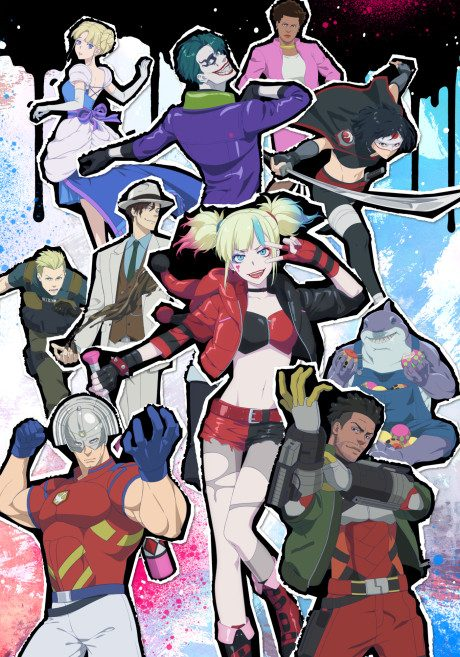
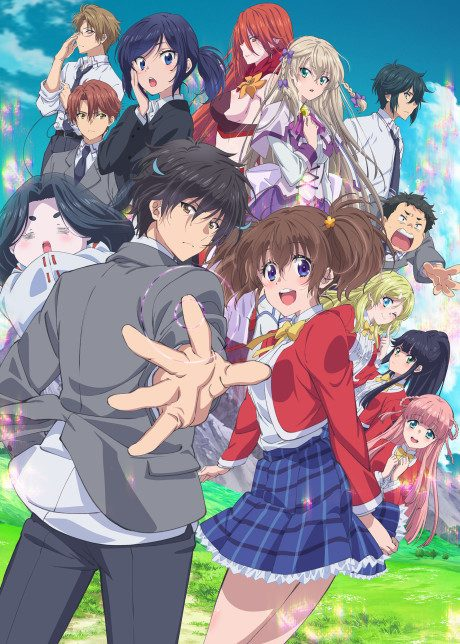

Suicide Squad ISEKAI
異世界スーサイド・スクワッド
Harley Quinn and other DC villains are sent to a fantasy world on a dangerous mission.
An original anime, so there's no book to continue with.
6.1AniList score
—Animeter, no votes yet
10episodes
Rate it or report where you stopped
Is it worth pushing through?
Built from what visitors report across all 10 episodes.
Loading reports…Checking what other people said about this one.
Sign in above with your email to add your report.
More like Suicide Squad ISEKAI
 Done7.7
Done7.7
 Manga Vol. 157.7
Manga Vol. 157.7
 Original7.1
Original7.1
 Manga Vol. 157.6
Manga Vol. 157.6
 Original8.6
Original8.6
 Manga Ch. 3408.9
Manga Ch. 3408.9
 Original7.7
Original7.7
 Manga Vol. 58.1
Manga Vol. 58.1
 Manga Vol. 128.0
Manga Vol. 128.0
 Unclear8.0
Unclear8.0
 Manga Vol. 117.8
Manga Vol. 117.8

Manga Vol. 56.3